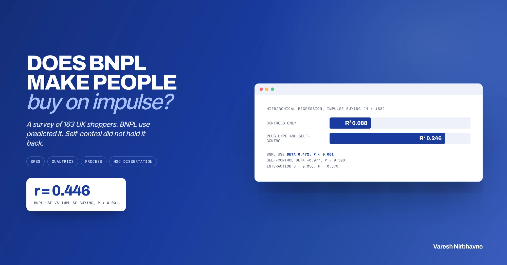

Does Buy Now Pay Later make people buy on impulse?
A survey of 163 UK shoppers aged 18 to 30, testing whether BNPL use predicts impulse buying and whether financial self-control holds it back. It predicted. Self-control did not hold it back.

- 163UK shoppers aged 18 to 30
- r = 0.446BNPL use vs impulse buying, p < 0.001
- 0.246R squared with BNPL added, up from 0.088
The question
Buy Now Pay Later splits a purchase into instalments at checkout, with no interest and almost no friction. The pitch is affordability. The worry is that removing the moment of payment also removes the moment of hesitation. I tested two things rather than assuming them: does BNPL use predict impulse buying once you control for who the person is and how much they earn, and does financial self-control protect people from that effect, as the self-regulation literature suggests it should?
What I did
- Built a 20 question, 8 to 10 minute anonymous survey in Qualtrics and collected 163 valid responses from UK residents aged 18 to 30, against a protocol floor of 150.
- Recruited through Instagram, WhatsApp, LinkedIn and personal networks, so the sample is convenience and snowball, which is non probability.
- Adapted three published scales: Roberts and Jones (2001) for BNPL related spending, the Rook and Fisher (1995) Buying Impulsiveness Scale, and the Tangney, Baumeister and Boone (2004) Brief Self Control Scale.
- Ran everything in SPSS: clean, reliability, composites, descriptives, correlation, then a two block hierarchical regression. Tested moderation with the Hayes PROCESS macro, Model 1, with 5,000 bootstrap resamples.
What I found
- BNPL use predicts impulse buying: r = 0.446, p < 0.001. The controls alone explained little (R squared 0.088, p = 0.215). Adding the predictors lifted R squared to 0.246, a significant change of 0.157 (F change 15.543, p < 0.001).
- BNPL usage carried the effect: beta 0.472, p < 0.001, roughly a sixth of the variance in impulse buying on its own.
- Financial self control did not predict impulse buying (beta minus 0.077, p = 0.308) and did not moderate the BNPL effect (b = 0.056, p = 0.376, 95% CI minus 0.068 to 0.180).
- One control mattered: shopping frequency was significant in the PROCESS model (b = 0.120, p = 0.047).
Why it mattered
The FCA brought BNPL into formal regulation in July 2026. The policy debate at the time was largely about affordability checks and credit reporting. Both assume the problem is people who cannot repay.
If the mechanism is actually impulse at the point of sale, the fix sits in checkout design rather than borrower screening. That is a different intervention, aimed at a different moment. The self-control question mattered most to me, because it is the assumption behind every responsible lending feature that screens for the wrong kind of customer.
Who answered
63.2% were aged 18 to 23. 50.3% were female, 25.2% male and 17.8% non binary. 49.0% were students, and 64.4% had under £1,000 a month in disposable income. That skew matters, and I treat it as a limit, not a footnote.
How I analysed it
The regression was hierarchical, in two blocks. Block 1 held eleven control variables: age, income, shopping frequency, three gender dummies and five employment dummies. Block 2 added BNPL usage and financial self control. Running the controls first means I can see what the predictors add on their own, rather than claiming credit for variance the demographics already explained.
The moderation test used the same eleven controls as covariates. All variance inflation factors came in under 2.5, so multicollinearity was not distorting the coefficients.
The measurement decisions
Three items came out of the scales before I ran anything, and each removal has a reason. These are the part I would defend hardest.
- BNPL item 4 measured awareness of personal finances, not BNPL usage, so it went. The remaining three items held together well: Cronbach's alpha 0.838, item total correlations from 0.669 to 0.749.
- Impulse buying item 5 referenced BNPL directly. Leaving it in would have put the predictor inside the outcome, which is criterion contamination, and it would have inflated the headline result in my favour. Removing it cost reliability: the four item scale came out at alpha 0.593, below the conventional 0.70. I kept the removal and reported the weak alpha.
- Financial self control item 4 was a reverse scored item that behaved as if respondents had not read it that way. Reverse scored, the scale fell to alpha 0.217. Left unreversed it reached 0.648 but could not be interpreted. The four item version I used came out at alpha 0.596.
I would rather publish a clean predictor and an honestly weak outcome scale than a tidy set of alphas built on a contaminated measure.
What I take from it
The null result is the useful one. If self control does not buffer the relationship, screening customers for financial discipline is unlikely to be the lever. The effect looks situational rather than dispositional, sitting in the checkout rather than in the person. That points at structural changes:
- Show the cumulative repayment total at checkout, not just the instalment size.
- Build in a cooling off window on larger BNPL baskets.
- Give customers a running summary of committed future repayments.
None of those require deciding in advance which customers are the risky ones.
Limits, stated plainly
- Cross sectional data shows association, not cause. The reverse direction is just as plausible: people who buy on impulse may simply choose BNPL more often. I cannot separate the two.
- The sample is non probability, young, heavily student and low income. It does not represent UK BNPL users as a group.
- Two of the three scales fell below the 0.70 reliability threshold after I removed the contaminated items. That widens the error around the impulse buying measure.
- The scales were adapted rather than used verbatim, which trades comparability for fit.
Scope
11,920 words, submitted September 2026 for the University of Birmingham MSc Marketing. Mark: 65. Qualtrics for collection, SPSS for reliability, descriptives, correlation and regression, and the Hayes PROCESS macro for the moderation test.
- MSc dissertation
- University of Birmingham
- Quantitative research
- SPSS
- Regression
- Consumer finance